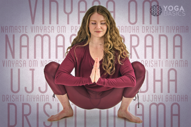

Yoga has become a global phenomenon over the last several decades. What started out thousands of years ago in the East as a meditative practice has now evolved into a modern lifestyle craze that generates billions of dollars. This can be attributed to its adaptability—people from all walks of life can practice and receive the benefits of yoga. Many celebrities swear by this physical and spiritual practice, and even those who don’t practice yoga seem to know someone who does. Practitioners often describe their experiences using terms like peace, calm, balance, strength, flexibility, and relaxation. But what exactly is yoga? And how far has this practice strayed from its ancient roots?
What is yoga?
Yoga is a Sanskrit word translated as “yoke” or “union.” To yoke means to draw together, to bind together; or to unite. Its aim is to yoke or create a union of the body, mind, soul, and universal consciousness. This process of uniting the physical, mental, emotional, and spiritual aspects of ourselves is what allows yogis to experience deep states of freedom, peace and self-realization.
